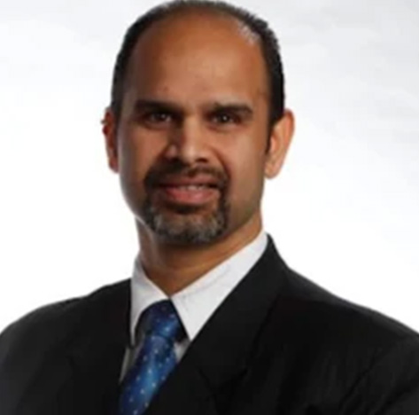
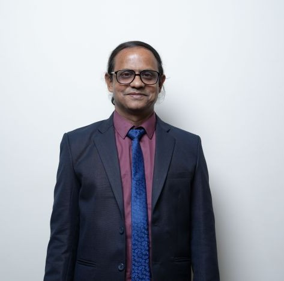
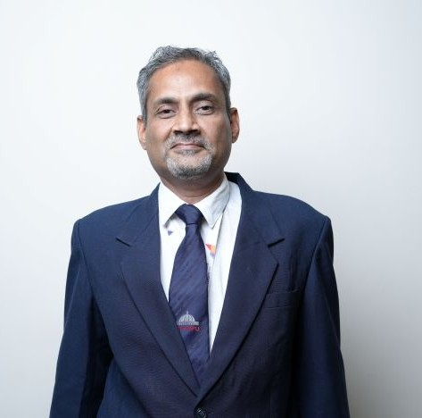
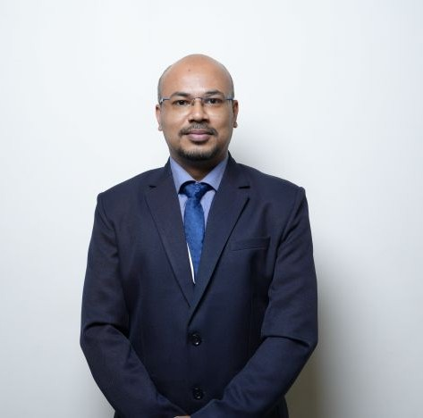
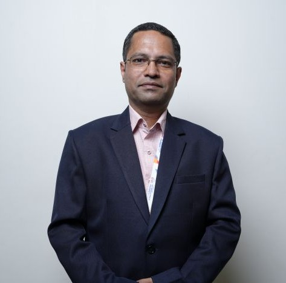

Dr. Siraj Ahmed Bhatkar
Program Director
Enhanced Oil Recovery (EOR),Artificial Lift Systems, Petroleum Produced Water Treatment, Drilling and Well Design
Program Director
Enhanced Oil Recovery (EOR),Artificial Lift Systems, Petroleum Produced Water Treatment, Drilling and Well Design

Professor
Samarth D. Patwardhan serves as Head of Centre for Subsea Engineering Research (CSER), and Professor in the Department of Petroleum Engineering at MITWPU, Pune, India. His research interests include production and reservoir engineering,…

Professor
His research area of interests includes Petroleum Exploration, Reservoir Engineering, Production Engineering, Geothermal Energy, Glaciology, Shallow Subsurface Imaging, Marine Electromagnetic methods, Machine Learning, Exploration…

Associate Professor
Petroleum production operations and engineering, production optimization, Surface production facilities and engineering
Assistant Professor
HP-HT Drilling Fluids, Oil Well Cementing, Gas Hydrates, Flow Assurance, Syntheses, Characterization, and Application of Low Dosage Kinetic Inhibitors

Assistant Professor
Dr. Kunal Modak is a geoscientist specializing in structural geology, focusing on Earth's deformation processes and their implications for petroleum exploration. He studies structural geometry, deformation patterns, and low-grade…
Assistant Professor
Dr. Kumar Abhijeet Raj's research interests include hydraulic fracturing design and optimization, proppant transport, optimizing fracture conductivity, development of fracturing fluids for high- temperature and high-pressure reservoirs,…
Assistant Professor
His research area of interests includes: Computational techniques for fracture network characterization, Fluid flow in naturally fractured reservoirs, Optimized field development techniques using Petrel-RE, Fractals and Multifractals,…
Assistant Professor
Dr. Ajendra Singh is an emerging scholar and researcher in the domain of petroleum engineering, with a specialized focus on reservoir characterization, CO₂ sequestration, and subsurface flow modeling. Currently serving as an Assistant…

Assistant Professor
His research area of interests includes hydrogen production, natural gas engineering and waste water treatment using adsorption, environmental engineering.

Laboratory Assistant
Nikhil Dattatray Deshmukh has pursued M.Sc in Analytical Chemistry from Bharati Vidyapeeth Deemed University, Pune. He also holds a B.Sc in Chemistry degree from the same university. He is now working as a Lab Assistant at MIT World Peace…
Laboratory Assistant
Dinesh Chandrakant Nikalje, is a Geology graduate with a post-graduate degree in Petroleum Technology and a Diploma in Drilling Technology. He has professional experience with the Borehole Geophysics Research Laboratory, where he…